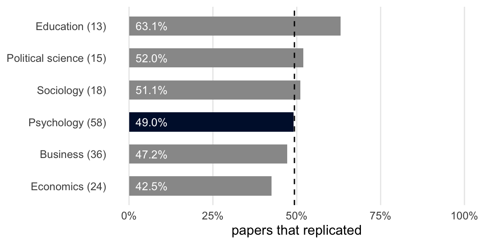
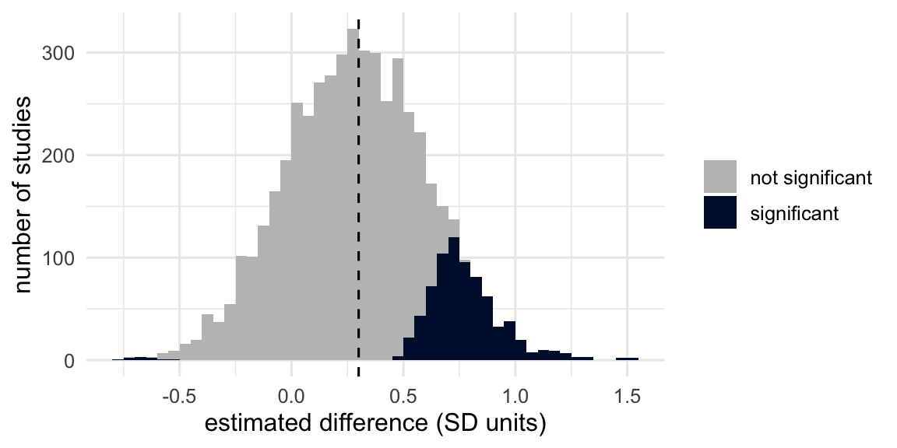

library(tidyverse)
navy <- "#001238"25 Can We Trust the Evidence? Replication and Open Science
Written for this book by Giorgio Arcara, with an AI assistant (Claude). This chapter is not in Irizarry’s Introduction to Data Science.
Draft
This chapter is a draft, written with an AI assistant (Claude) on 18 November 2026, and not yet reviewed by the instructor. It may be substantially rewritten or removed.
The previous chapter was about interpreting a single result. But a single study is rarely the last word. A theory in psychology, a clinical guideline, or the decision to launch a new version of an app usually rests on several studies, many of them done by other people. Before building on them, we need to ask a different question: can we trust the evidence? If the same study were run again, would it find the same result?
Psychology had to face this question in the 2010s, and the answer was uncomfortable. This chapter explains what went wrong and why, shows with two small simulations how ordinary research practices produce unreliable results, and describes the practices that make evidence more credible. None of it is specific to academic research: the same problems appear in any analysis of behavioural data, including A/B tests and product dashboards.
25.1 Reproducible, robust, replicable
Three words are often used loosely, and it helps to separate them. Each one asks whether a result survives a different kind of repetition:
| The result is… | if we repeat the study with… | Example of failure |
|---|---|---|
| reproducible | the same data and the same code | a script that only runs on the author’s laptop, or a number in the paper that the code does not produce |
| robust | the same data and a different, equally reasonable analysis | the effect disappears with a different exclusion rule or outcome measure |
| replicable | new data, collected to answer the same question | a new sample of participants shows no effect |
Reproducibility is the minimum: if we cannot get the same numbers from the same data, nothing else can be checked. It is mostly a matter of how the analysis is organised: scripts instead of clicks, a project folder, version control. These are the topics of the Reproducible projects and Git and GitHub chapters of Part 1.
Robustness is less obvious. In a many-analysts study, Silberzahn and colleagues (2018) gave the same dataset to 29 teams of researchers and asked the same question: are football referees more likely to give red cards to players with darker skin? The teams chose different, defensible analyses. Their estimates ranged from no effect to a nearly threefold increase; twenty teams found a significant effect and nine did not. Nobody made a mistake. The result depended on choices that, in a normal paper, a single team makes once and the reader never sees.
25.2 The replication crisis
In the early 2010s psychology went through what is now called the replication crisis. The largest test came in 2015, when the Open Science Collaboration repeated 100 studies published in three leading psychology journals. Ninety-seven percent of the original studies had reported statistically significant results; only thirty-six percent of the replications did, and the effects found in the replications were on average half the size of the original ones (Figure 25.1).

A decade later, the largest test so far extended the question beyond psychology. Tyner and colleagues (2026) repeated 274 findings from 164 papers, published between 2009 and 2018 in 54 journals of six social and behavioural sciences: business, economics, education, political science, psychology and sociology. The replications used the original materials where possible, their protocols were reviewed before the data were collected, and they were large: their median power to detect the original effect was above 99%. Even so, only about half of the findings replicated: 55% of the claims, 49% of the papers, and 49% of the 58 psychology papers (Figure 25.2). The effects shrank too: the median correlation went from 0.25 in the original studies to 0.10 in the replications. The rates in the six fields were similar; the differences between them could easily be due to chance. Similar problems have also been documented in other fields, including medicine.

Two details of this study matter for what follows. First, the replications were so large that their failures cannot be blamed on low power: they could easily detect the original effects, if those effects were real and as large as reported. Second, the authors note that some shrinkage is expected whenever only significant findings are followed up, a point that the section Small studies and exaggerated effects below makes with a simulation. Their results also depend on how success is defined: thirteen different criteria gave replication rates from 29% to 75%. There is no single “replication rate”, but every criterion tells the same story: many published findings are weaker than they first appeared.
A failed replication does not prove that the original effect is false. The replication is a study too, with its own sampling error, and it may differ from the original in small ways (the participants, the country, the year). But when most original studies are significant and most replications are not, and the replicated effects are systematically smaller, chance alone cannot explain the pattern. Something in the way the original studies were done, or selected for publication, made them look stronger than they were.
25.3 Why it happened
Fraud exists, but it was not the main cause. Three ordinary features of how research was done combined.
Publication bias
Journals preferred significant, novel results. Studies that found nothing tended to stay in the drawer, so the published literature was a selected sample of all the studies that were run: the ones that happened to cross p < 0.05. This is publication bias. The same happens outside journals, whenever only the successes are reported: the A/B tests that “won”, the analyses that “worked”.
Small studies and exaggerated effects
Many studies had small samples and therefore low power (Chapter 22). Low power does not only mean that real effects are often missed. It also means that, when an underpowered study does find a significant effect, its estimate tends to be too large.
The simulation below shows why. The true difference between two groups is 0.3 standard deviations, a small-to-medium effect, and each study tests 20 participants per group. We run 5,000 such studies:
one_study <- function(n, d) {
x <- rnorm(n, mean = 0, sd = 1)
y <- rnorm(n, mean = d, sd = 1)
c(estimate = mean(y) - mean(x), p = t.test(y, x)$p.value)
}
set.seed(2026)
studies <- as_tibble(t(replicate(5000, one_study(n = 20, d = 0.3))))
studies |>
summarise(power = mean(p < 0.05),
mean_estimate_all = mean(estimate),
mean_estimate_significant = mean(estimate[p < 0.05 & estimate > 0]))
#> # A tibble: 1 × 3
#> power mean_estimate_all mean_estimate_significant
#> <dbl> <dbl> <dbl>
#> 1 0.150 0.294 0.781Only about 15% of the studies are significant. Across all studies, the estimates are centred on the true value, 0.3. But the significant studies estimate, on average, a difference more than twice as large (Figure 25.3). With 20 participants per group, a difference has to be large to cross the threshold, so only the studies that overestimated the effect by chance are significant. If only those are published, the literature reports an effect more than twice as large as the real one, and a replication with the same sample size will usually fail. This is sometimes called the winner’s curse.
studies |>
mutate(result = if_else(p < 0.05, "significant", "not significant")) |>
ggplot(aes(estimate, fill = result)) +
geom_histogram(binwidth = 0.05, boundary = 0) +
geom_vline(xintercept = 0.3, linetype = "dashed") +
scale_fill_manual(values = c("not significant" = "grey75", "significant" = navy)) +
labs(x = "estimated difference (SD units)", y = "number of studies", fill = NULL) +
theme_minimal(base_size = 12)
Flexibility in the analysis
Researchers also had a great deal of undisclosed flexibility in how they collected and analysed their data, the same flexibility that the many-analysts study made visible. In 2011, Simmons, Nelson and Simonsohn showed that combining a few common and seemingly harmless choices can push the false-positive rate far above the nominal 5%. These are the questionable research practices described in Chapter 3.
The simulation below has no effect at all: both groups come from the same distribution. The researcher measures two related outcomes (for example, two stress questionnaires) and looks at the data after 20 participants per group. If nothing is significant, they test 10 more per group and look again. They report whichever of the four tests is significant:
flexible_study <- function() {
x1 <- rnorm(30); y1 <- rnorm(30) # outcome 1
x2 <- 0.5 * x1 + sqrt(0.75) * rnorm(30) # outcome 2,
y2 <- 0.5 * y1 + sqrt(0.75) * rnorm(30) # correlated with 1
p <- c(t.test(x1[1:20], y1[1:20])$p.value, # first look
t.test(x2[1:20], y2[1:20])$p.value,
t.test(x1, y1)$p.value, # after 10 more
t.test(x2, y2)$p.value)
c(planned = p[3] < 0.05, # one outcome, sample size fixed in advance
flexible = any(p < 0.05)) # any of the four tests
}
set.seed(2026)
rowMeans(replicate(5000, flexible_study()))
#> planned flexible
#> 0.05 0.13The planned analysis gives a false positive 5% of the time, as it should. The flexible one does so about 13% of the time, more than twice as often, with only two choices. Real studies offer many more: exclusion rules, covariates, subgroups, transformations. Each choice is defensible on its own; the problem is that it is made after seeing which option gives a significant result. This is the multiple-comparisons problem (Chapter 19) in a form that is invisible to the reader.
25.4 The same problems outside academia
The replication crisis is usually told as a story about psychology journals, but the mechanisms are general. They appear in any setting where many analyses are possible and some results are more welcome than others.
- Peeking at an A/B test. Checking the dashboard every day and stopping the test as soon as the new version is significantly better is the optional stopping of the simulation above. It inflates the false-positive rate in the same way.
- Many metrics. A product team that tracks twenty metrics in each experiment will, on average, see one of them significant even when the change does nothing.
- The winner’s curse after launch. The versions that are launched are those that looked best in their test. Their effect in the test was, on average, overestimated, so it tends to shrink after launch. The novelty effect (Randomised controlled trials and A/B tests in Chapter 4) makes it shrink further.
- Many analyses at no cost. An LLM can produce ten versions of an analysis in a minute. That makes it easy to keep the one that “works” without noticing that we are doing so (see AI and responsible coding in Part 1).
25.5 What helps
The response of the research community is known as Open Science: a set of practices that make research easier to check. Most of them have direct equivalents in industry.
- Decide before looking. A preregistration is a plan, written and timestamped before the data are seen, that fixes the hypotheses, the sample size, the exclusion rules and the analysis (see Preregistration and Two ways of exploring in Chapter 3). In a Registered Report, a journal reviews and accepts the study before the data are collected, so publication no longer depends on the result. In an A/B test, the equivalent is to fix the primary metric and the sample size before starting, and not to stop early.
- Plan the sample size. A power analysis (Chapter 22) protects against both missed effects and exaggerated estimates.
- Report everything, and report estimates. All conditions, outcomes and exclusions, not only the ones that worked. Effect sizes with confidence intervals (Chapter 21) show how precise a result is, which a p-value alone does not.
- Make it reproducible. Share the code, the materials and, as far as privacy allows, the data (see Open materials, data, and code in Chapter 3). A project organised as in Part 1 is already most of the way there.
- Replicate. A result that has been found again, by different people with new data, deserves much more confidence than a single study. Consistency across studies is also one of Bradford Hill’s criteria (Chapter 24).
These practices also give us a short list of questions to ask of any published result before relying on it. Was the analysis planned in advance? Was the sample large enough to detect a plausible effect? Is the effect implausibly large for what was manipulated? Are the data and code available? Has anyone replicated it?
25.6 Further reading
- Open Science Collaboration (2015), Estimating the reproducibility of psychological science, Science, 349(6251), aac4716, https://doi.org/10.1126/science.aac4716.
- A. H. Tyner et al. (2026), Investigating the replicability of the social and behavioural sciences, Nature, 652, 143–150, https://doi.org/10.1038/s41586-025-10078-y. The SCORE project; open access.
- J. P. Simmons, L. D. Nelson & U. Simonsohn (2011), False-positive psychology: Undisclosed flexibility in data collection and analysis allows presenting anything as significant, Psychological Science, 22(11), 1359–1366, https://doi.org/10.1177/0956797611417632.
- R. Silberzahn et al. (2018), Many analysts, one data set: Making transparent how variations in analytic choices affect results, Advances in Methods and Practices in Psychological Science, 1(3), 337–356, https://doi.org/10.1177/2515245917747646.
- K. S. Button et al. (2013), Power failure: Why small sample size undermines the reliability of neuroscience, Nature Reviews Neuroscience, 14(5), 365–376, https://doi.org/10.1038/nrn3475.
- A. Gelman & J. Carlin (2014), Beyond power calculations: Assessing Type S (sign) and Type M (magnitude) errors, Perspectives on Psychological Science, 9(6), 641–651, https://doi.org/10.1177/1745691614551642. On the exaggerated estimates of small studies.
- M. R. Munafò et al. (2017), A manifesto for reproducible science, Nature Human Behaviour, 1, 0021, https://doi.org/10.1038/s41562-016-0021.
- B. A. Nosek et al. (2022), Replicability, robustness, and reproducibility in psychological science, Annual Review of Psychology, 73, 719–748, https://doi.org/10.1146/annurev-psych-020821-114157.
- R. Kohavi, D. Tang & Y. Xu (2020), Trustworthy Online Controlled Experiments: A Practical Guide to A/B Testing. Cambridge: Cambridge University Press.
25.7 Exercises
1. Run the winner’s-curse simulation again with a true difference of 0.8 instead of 0.3, still with 20 participants per group. Then go back to 0.3 with 100 participants per group. In each case, compute the power and the average estimate of the significant studies. When is the exaggeration largest?
2. Modify flexible_study() so that the researcher uses only one outcome but looks at the data after every 10 participants per group, up to 100, and stops at the first significant result. What is the false-positive rate? Compare it with the planned analysis.
3. An A/B test compares two versions of an app on 20 unrelated metrics, and the change has no effect on any of them. Simulate 1,000 such experiments, with 500 users per version and normally distributed metrics, and compute the proportion of experiments in which at least one metric is significant. Compare it with \(1 - 0.95^{20}\). How would you correct for this (Chapter 19)?
4. In your own words, give an example from human–technology research of a result that is reproducible but not robust, and one that is robust but not replicable (Table 25.1).
5. Choose a published study, or a press release about one, on technology use and wellbeing. Answer the five questions at the end of What helps. Which of them can you answer from the paper alone?